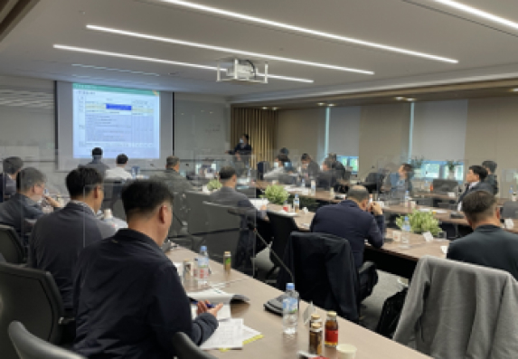
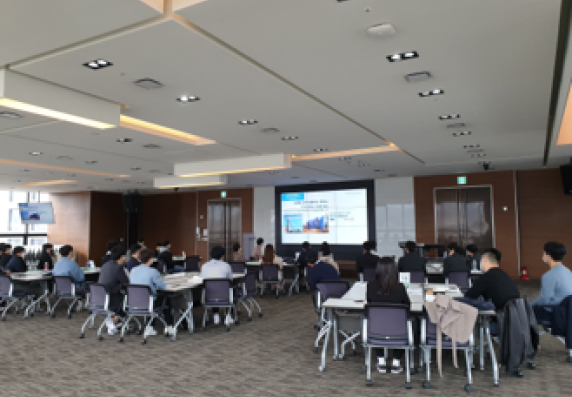
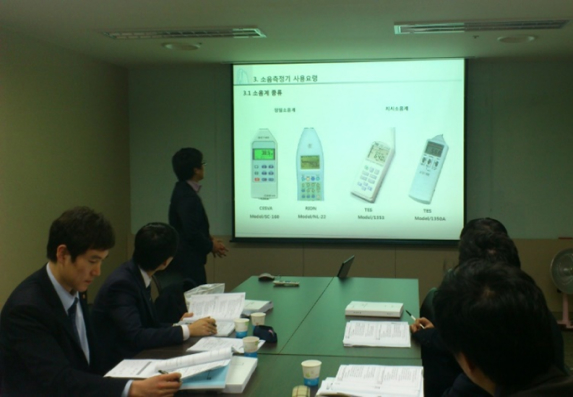
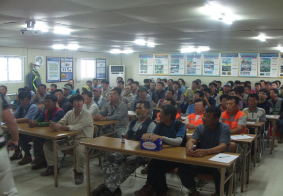

환경사고의 예방 및 환경오염을 줄이기 위하여 동부건설은 전 현장을 대상으로 상시적으로 환경리스크를 점검하고 있습니다.
※ 2022년 기준
| 점검 대상 | 점검 주관 | 점검 유형 | 점검 횟수 | 비고 |
|---|---|---|---|---|
| 동부건설 전체 현장 | 본사 기술연구소기술팀 | 현장 지원점검 | 50회 | 현장별 연 1회 이상 방문 |
| 온라인 점검 | 3회 | 각 현장별 점검 |
동부건설은 유사시 환경영향을 최소화하고
변화하는 환경규제에 유연하게 대응할 수 있도록
임직원에 대한 적절한 환경교육을 제공하고 있습니다.
현장의 관리팀장 및 담당자는 물론,
신입사원과 신규 입사자에 대한 기본적인 환경교육을 제공하고 있으며,
착공 초기에 발생할 수 있는 환경 Risk 사전예방과
대응을 위한 교육 또한 진행하고 있습니다.
관리팀장 폐기물 및 주요 환경법규 교육
신입사원 기본 환경교육
신규 착공 현장 환경교육
경력사원 기본 환경교육
동부건설 전 임직원은 <일회용품 Zero>, <플로깅 동부> 등의 캠페인 활동에 참여 함으로서 환경을 아끼고 실천에 앞장서는 녹색경영을 실천하고 있습니다.
동부건설은 지속가능한 녹색건설이라는 기업 비전의 달성과 탄소중립을 통한 기업의 지속가능한 경영환경을 조성하기 위하여 친환경 기술개발을 실천하고 있습니다. 2022년에는 한국산업기술진흥원으로부터 건설폐기물 저감기술에 대한 녹색기술 인증을 취득하였습니다. 앞으로도 친환경 기술개발을 통해 회사의 경쟁력 강화는 물론, 환경을 보호하는데 앞장서겠습니다.
온실가스 및 에너지
| 구분 | 2020년 | 2021년 | 2022년 | |||
|---|---|---|---|---|---|---|
| 실적 | 실적 | 계획* | 실적 | |||
| 매출액 (억원) | 10,902 | 10,902 | 12,200 | 13,001 | ||
| 온실가스 배출량 (tCO2-eq) |
집약도 ** | 1.39 | 1.32 | 1.25 | 1.11 | |
| 지표 | 15,136 | 13,373 | 15,280 | 14,488 | ||
| Scope1 | 9,853 | 7,758 | - | 8,279 | ||
| Scope2 | 5,283 | 5,615 | - | 6,209 | ||
| 연료 사용량 (kℓ) |
집약도 | 0.34 | 0.29 | 0.23 | 0.23 | |
| 지표 | 3,716 | 2,948 | 2,760 | 3,036 | ||
| 전력 사용량 (Mwh) |
집약도 | 1.05 | 1.20 | 1.09 | 1.04 | |
| 지표 | 11,499 | 12,223 | 13,320 | 13,516 | ||
| 도시가스 사용량 (Nm³) |
집약도 | 4.17 | 7.99 | 13.82 | 4.87 | |
| 지표 | 45,467 | 81,182 | 168,600 | 63,308 | ||
* 2022년도부터 계획 수립
** 집약도 : 매출액 1억원당 발생량·사용량
용수 및 폐기물
| 구분 | 2020년 | 2021년 | 2022년 | |||
|---|---|---|---|---|---|---|
| 실적 | 실적 | 계획 | 실적 | |||
| 용수 (m³) |
집약도 | 6.45 | 11.38 | 11.19 | 6.98 | |
| 지표 | 70,310 | 115,556 | 136,560 | 90,718 | ||
| 상수도 | 43,078 | 69,647 | - | 67,258 | ||
| 지하도 | 1,244 | 12,747 | - | 6,323 | ||
| 하천수 | 25,988 | 32,062 | - | 16,817 | ||
| 재활용수 *** | - | 1,100 | - | 320 | ||
| 폐기물 (ton) |
집약도 | 4.48 | 9.53 | 9.37 | 3.80 | |
| 지표 | 48,883 | 96,762 | 114,360 | 49,436 | ||
| 매립 | 74 | 74 | - | - | ||
| 소각 | 95 | 74 | - | - | ||
| 재활용 | 48,613 | 96,614 | - | 49,436 | ||
*** 재활용수 : 건설현장 中 담수 및 용수 재이용 가능현장 기준
수질 및 대기 오염물질
| 구분 | 2020년 | 2021년 | 2022년 | |
|---|---|---|---|---|
| 수질오염물질 (mg/L) |
BOD | 2.29 | 1.73 | 0.95 |
| COD | 3.62 | 4.71 | 2.98 | |
| TOC | 1.80 | 1.76 | 1.90 | |
| SS | 6.30 | 9.21 | 1.71 | |
| 대기오염물질 (mg/m³) |
NOX | 0.01 | 0.01 | 0.07 |
| SOX | - | - | - | |
| PM10 | 25.68 | 32.88 | 32.88 | |
| PM2.5 | 15.74 | 22.84 | 20.10 | |